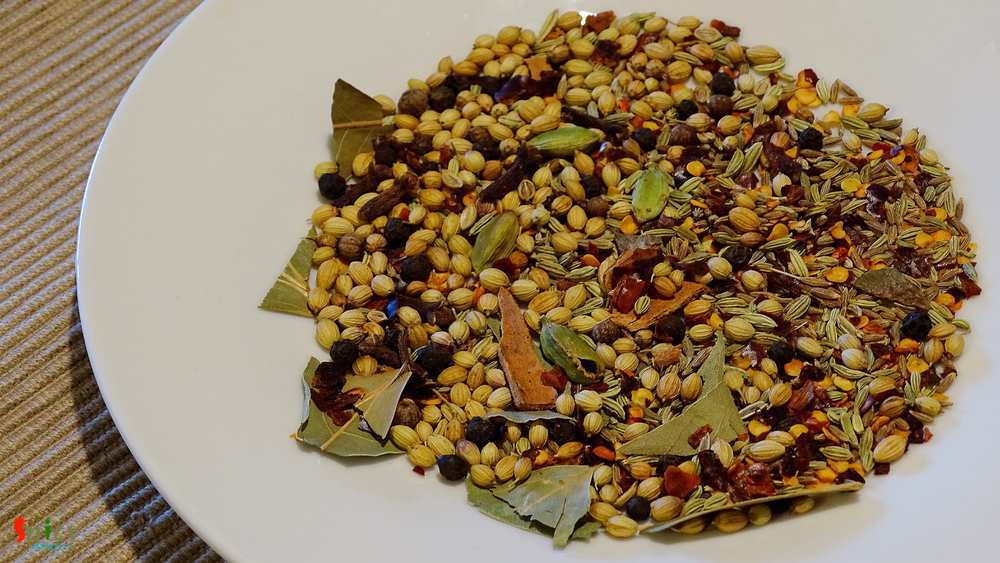
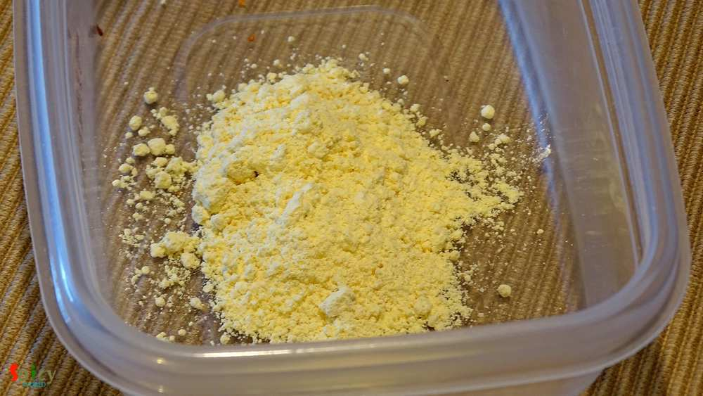
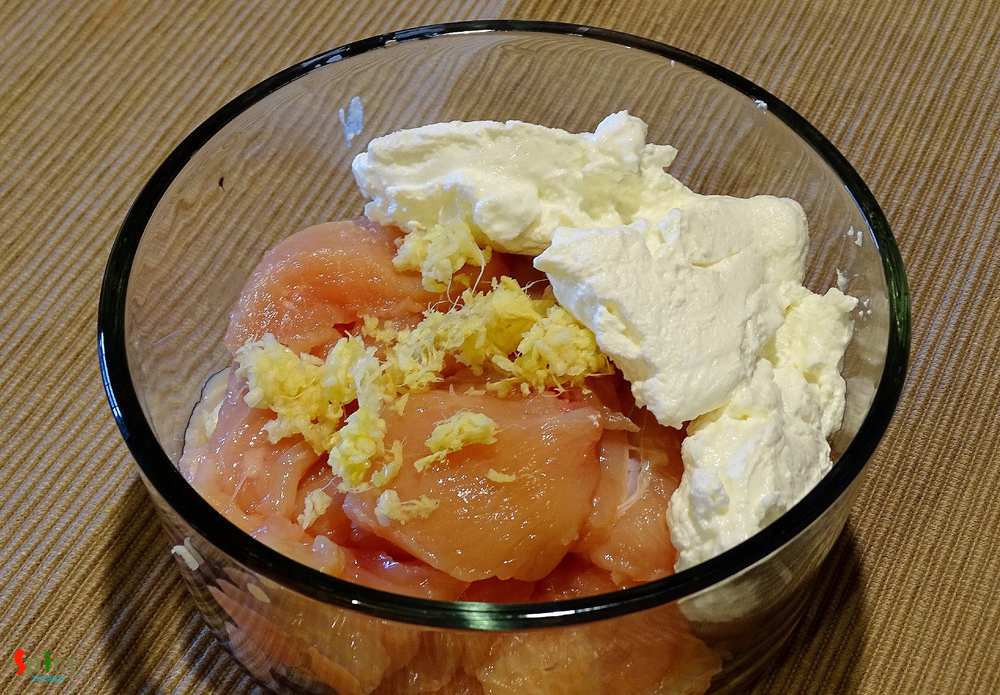
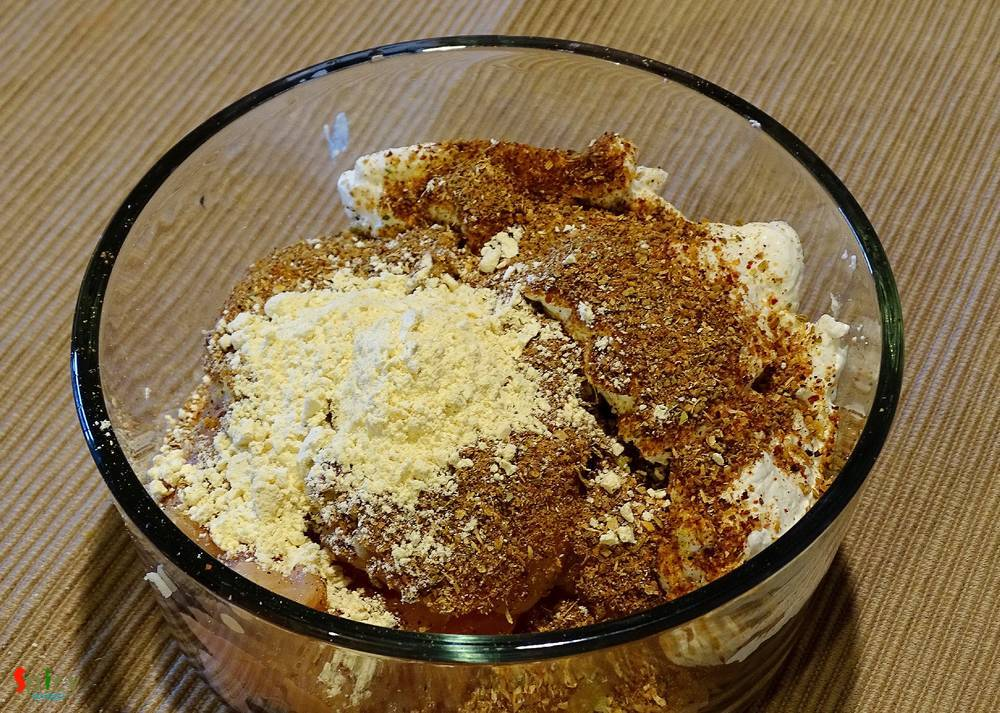
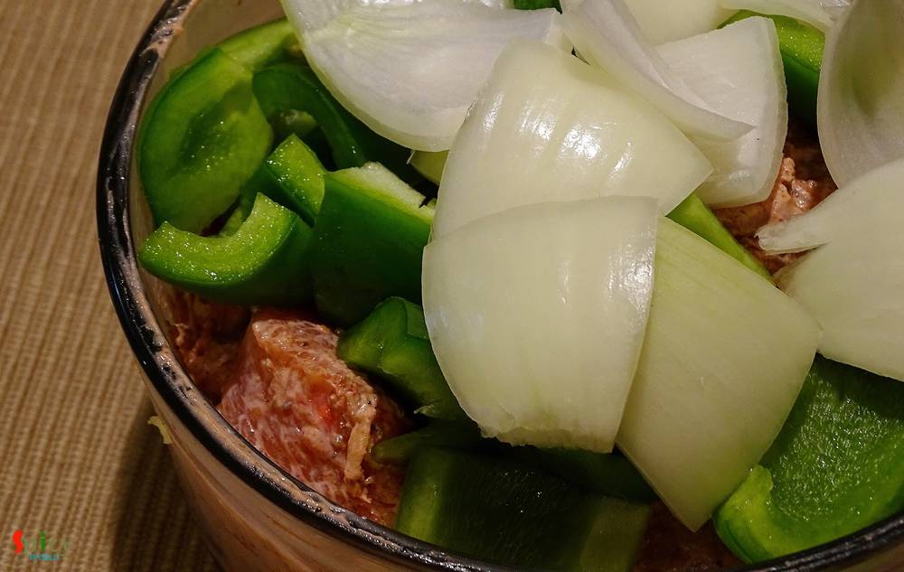
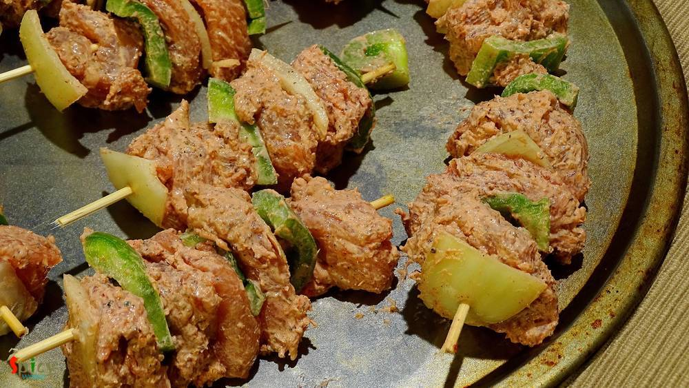
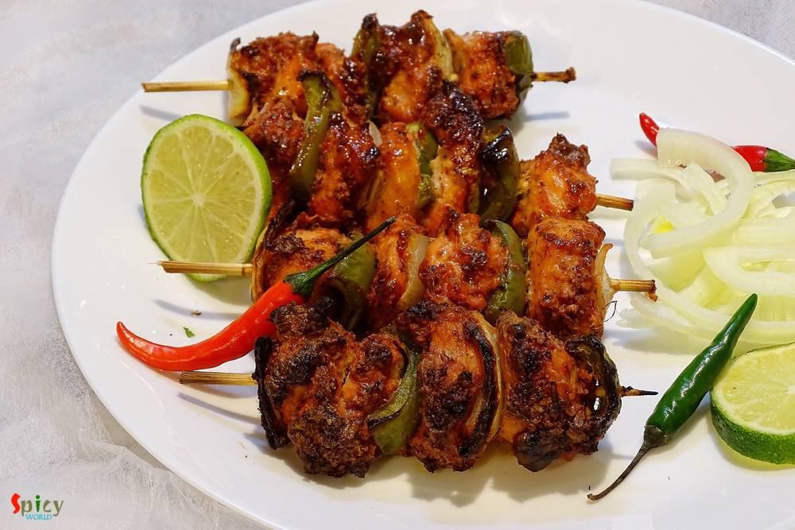
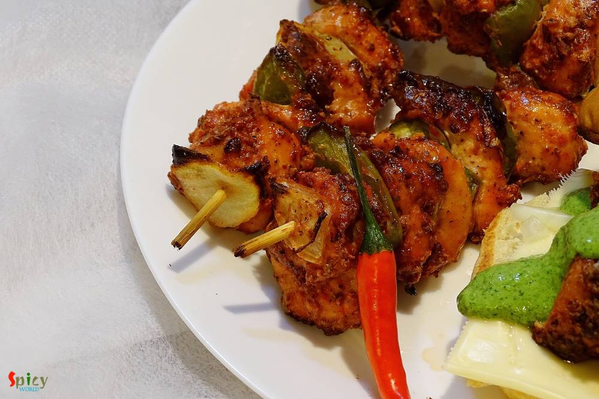

Simple and Easy Recipes
Chicken Tikka Kabab / Kebab
© 2016 Spicy World, Published on: Mar 15, 2016
Do you have some boneless chicken, onion and capsicum in your kitchen?? Then why don't you make some 'tikkas'? Chicken Tikka is a very well known starter or kabab in India. Nowadays it also become popular in the whole world. You can make delicious gravy also with these tikkas. But first you have to make chicken tikka and here is the recipe ..

Ingredients
- Boneless chicken cut into cubes (20 pieces).
- Half cup of hung curd.
- 2 Teaspoons of ginger and garlic paste.
- Whole spices (2 Teaspoons of cumin seeds, 3 Teaspoons of coriander seeds, 2 Teaspoons of whole black pepper, 2 dry red chilies or 1 Teaspoon of chilli flakes, 4-5 green cardamom, 2-3 small cinnamon sticks, 1 bay leaf, 1 Teaspoon of fennel seeds).
- Salt.
- 1 Teaspoon of kashmiri red chilli powder.
- A cup of onion and capsicum chunks.
- 1 and half Tablespoons of besan / gram flour.
- 3 Teaspoons of mustard oil.


Steps
Dry roast all the whole spices for 4 - 5 minutes in a pan. Then put those in a grinder and make a powder. This is tikka masala.

Then in the same pan dry roast the besan for 3 - 4 minutes in medium flame and keep aside. Do not burn it.

For the marination take mixing bowl. Put the chicken pieces, hung curd and ginger garlic paste.

Add 2-3 Tablespoons of tikka masala, kashmiri red chilli powder, salt, oil and roasted besan. Mix everything very well.

Put the marinated chicken into the refrigerator for at least 4-6 hrs.
For best result keep it overnight.
Before arrange the kababs add some cubed onion and capsicum into the chicken. Mix well and keep it for 30 minutes.

Soak the bamboo skewers into water for 15 minutes before putting in the oven.
Take a skewer , put a onion cube then a chicken piece then a capsicum cube. Repeat this process with all the skewers.
Add ginger garlic paste, salt, half Teaspoon of sugar, a Teaspoon of turmeric powder and all the spice powder. Mix well for 4-5 .

Put the kababs into the oven and closer to the filaments for 20 minutes in the highest temperature.
After that take out those, turn the other side and brush some butter.
Again put those into the oven for 15 minutes.
After that take out your kebabs from oven and brush some butter.


Your Chicken Tikka Kebab is ready.
Sprinkle some lime juice / chaat masala over your kebabs and enjoy ..!!
")